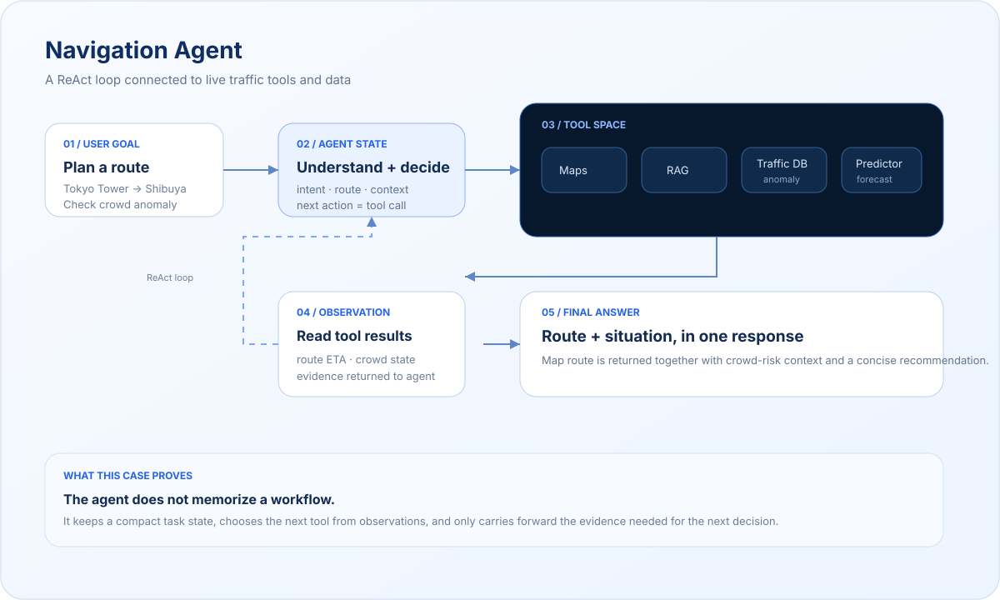

01 / Agent Application · 2024.09 – 2025.08
Navigation
Agent
面向交通场景的 ReAct 单智能体系统，用于路线规划、异常人流分析、交通知识问答与交通态势分析，并通过对话式界面连接地图、知识库、数据库与预测模型。
- Role
- 设计负责人
- Period
- 2024.09 – 2025.08
- Agent
- LangGraph · ReAct
- Interface
- Chatbot · Map · Tool Results
01 / Execution Case
A traffic agent connected to real tools and data.
Navigation Agent 是这条项目主线的起点：让一个 Agent 不只回答交通问题，而是理解用户目标、维护任务状态，根据每次 Observation 决定下一步工具调用，并把路线、知识检索、人流异常和预测结果收敛成一次完整回答。

上下文原则：决策上下文只保留目标、必要历史和工具返回的有效证据，不把完整工具日志持续堆回模型上下文。这一做法后来成为 GIS Agent 和 GGAI 的 Context Engineering 基础。
LangGraphMCPGoogle Maps APIFAISSMySQLReAct AgentRAGDeep LearningGradio
02 / Contribution
Building the first end-to-end agent loop.
- 01
Agent 状态流设计
基于 LangGraph 设计交通 Agent 状态流，实现用户意图识别、任务拆解、工具调用与结果生成。
- 02
ReAct 多步骤任务
以 ReAct 范式组织路线规划、知识检索、异常人流查询与交通预测等多步骤任务，让模型在推理与工具执行之间形成闭环。
- 03
统一工具接入
通过 MCP 接入 Google Maps API、FAISS、MySQL 与深度学习预测模型，将地图、知识、数据库和模型能力统一到 Agent 工具层。
- 04
对话式产品界面
参与实现 Gradio 对话式前端，支持地图路线生成、地图和思维链展示、异常人流分析、交通知识问答与交通态势分析。
- 05
领域经验沉淀
沉淀交通领域 Prompt、工具描述与知识检索策略，为后续 GIS Agent 与通用 Agent Runtime 的工具设计和任务组织提供基础。
03 / Scope
One agent, several traffic capabilities.
Route planning连接地图能力生成与展示路线。
Crowd anomaly查询并分析异常人流信息。
Traffic QA结合检索与领域知识完成问答。
Traffic forecasting调用预测模型辅助交通态势分析。
RAG通过 FAISS 等知识检索补充领域上下文。
Chat + map用对话与地图共同承载 Agent 输出。
What carried forward
这个项目建立了“Agent 状态流 + 工具调用 + 领域 Prompt + 对话交互”的第一套完整闭环，后续项目开始进一步处理更多工具、更长任务链和更强的运行控制。